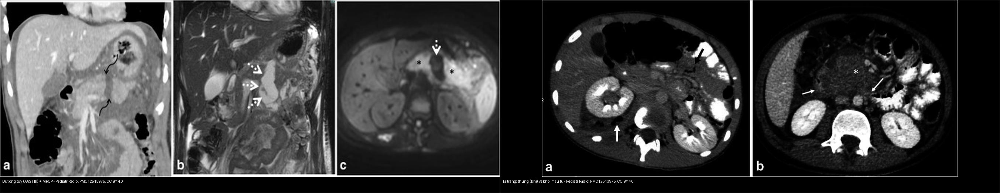
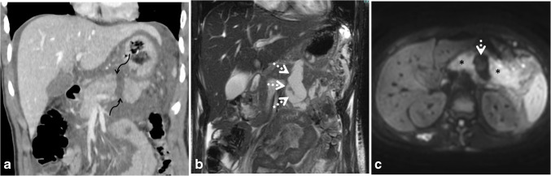
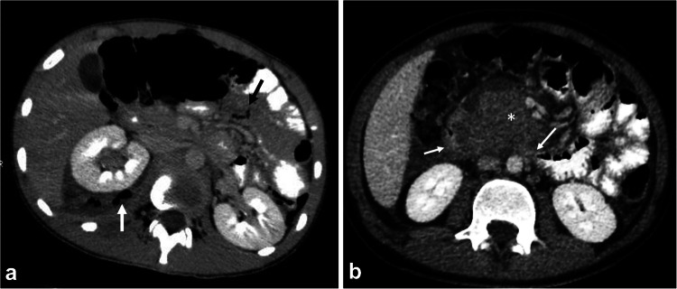
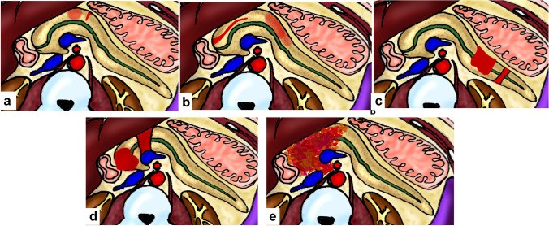
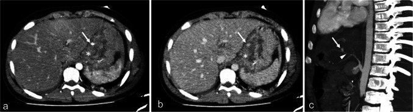

623 — Chấn thương tụy–tá tràng ở trẻ: AAST tụy I–V, đứt ống tụy (khe 10 mm) & khối máu tụ thành tá tràng
Tags: pattern:chan-thuong-bung pattern:dut-ong-tuy vung:tuy-ta-trang score:AAST protocol:CT-bung-chant-thuong
Mức chắc chắn (certainty): tổng hợp y văn (literature synthesis) — nhóm tự biên từ bài tổng quan CT chấn thương bụng nhi có số (Pediatric Radiology 2025, CC BY 4.0) + AAST-OIS 2018; các ca trong quiz là ca nguyên văn (verbatim case) chép đúng tuổi – cơ chế – chú thích gốc.
1. Tổng quan bệnh học – cơ chế hình ảnh
Chấn thương bụng kín ở trẻ (ngã xe đạp, tay lái đâm vào bụng — handlebar injury, tai nạn xe) có thể làm tổn thương tụy và tá tràng — một cặp "ẩn" nhất của chấn thương bụng vì cả hai nằm sau phúc mạc.
- Cơ chế: tụy và đoạn D2–D3 tá tràng bị kẹp giữa vật đâm (tay lái/cột lái) và cột sống → đụng dập/đứt tụy và khối máu tụ thành tá tràng (nếu rách một phần) hoặc thủng tá tràng (nếu rách toàn bộ chiều dày).
- TẠI SAO khó phát hiện sớm: tụy sau phúc mạc, vỡ nhỏ không chảy máu ồ ạt → dấu hiệu xuất hiện muộn và không đặc hiệu (đau bụng, nôn, sốt); amylase/lipase có thể bình thường vài giờ đầu. Trên CT, dấu hiệu gián tiếp hay gặp nhất là dịch ở khoang cạnh thận trước (anterior pararenal space) / túi mật–tụy (lesser sac) — "dịch bất thường ở khoang cạnh thận trước là chỉ báo tốt nhất của chấn thương tụy"; kèm tụy to, thâm nhiễm mỡ quanh tụy, dịch tự do, rồi nang giả (do viêm tụy sau chấn thương).
- TẠI SAO "ống tụy" là chìa khóa: đứt ống tụy chính → dịch tụy rò ra → nang giả, rò tụy, hẹp ống và quyết định mổ (cắt tụy xa) vs điều trị bảo tồn. Trên CT, tổn thương ống tụy có thể dự đoán khi đường rách kéo dài > 50% trục ngắn, dịch tự do ổ bụng, hoặc dịch khu trú quanh tụy (điển hình: khe rách chứa dịch rộng ~10 mm giữa hai đầu tụy = dấu đứt ống).
- TẠI SAO MRI/MRCP: MRI + MRCP (có thể tiêm secretin) thể hiện độ liên tục của ống tụy — đứt ống = không thấy ống ở vị trí tổn thương; MRI cũng theo dõi biến chứng muộn (nang giả, rò, hẹp). Ở trẻ, ưu tiên MRI thay CT theo dõi để giảm phơi nhiễm tia.
- Hệ phân độ AAST-OIS tụy (2018) — theo ống tụy:
- I: đụng dập nhỏ / rách nông, không tổn thương ống.
- II: đụng dập lớn / rách, không tổn thương ống, không mất mô.
- III: đứt tụy xa hoặc rách sâu có tổn thương ống tụy xa.
- IV: đứt tụy gần (proximal) hoặc tổn thương nặng ảnh hưởng bóng Vater / ống mật chủ trong tụy.
- V: vỡ nát đầu tụy (shattered pancreas).
- Điều trị theo huyết động: đa số chấn thương tụy ở trẻ điều trị bảo tồn (ổn định huyết động); đứt ống tụy xa (grade III) có thể là chỉ định cắt tụy xa; grade IV (tổn thương gần/ampulla) phức tạp hơn (nối ống–ruột / dẫn lưu / ERCP đặt stent tùy ca).
2. Mẫu hình + chẩn đoán phân biệt theo vị trí (gamut)
Gamut theo vị trí – cơ chế:
- Tụy thân/đuôi (distal): đứt ngang / rách sâu có tổn thương ống tụy xa → AAST III (thường gặp nhất khi có tổn thương ống; cand. cắt tụy xa).
- Tụy đầu/cổ (proximal) + quanh bóng Vater: đứt gần, tổn thương ampulla/ống mật chủ trong tụy → AAST IV; vỡ nát đầu tụy → AAST V.
- Tá tràng D2–D3 (sau phúc mạc, cạnh đầu tụy): khối máu tụ thành tá tràng (rách một phần, không có khí ngoài lòng) vs thủng tá tràng (rách toàn bộ, khí ngoài lòng + dịch quanh thận chứa bọt khí).
- Hệ quả mạch máu: giả phình / rò động–tĩnh mạch (AVF) trong nhu mô tạng (contained vascular injury) — đòi hỏi theo dõi/nút mạch.
Gamut theo dấu hiệu CT (cùng tạng, khác mức độ):
- Đụng dập (contusion): vùng giảm đậm độ ở thì tĩnh mạch cửa → trở về đậm độ bình thường ở thì muộn.
- Mất mạch/nhồi máu (devascularization/infarction): vùng không ngấm thuốc ở MỌI thì, đậm độ không đổi.
- Chảy máu hoạt tính (active bleeding): blush > 90 HU, lan rộng/tăng ở thì muộn.
- Giả phình/AVF (pseudoaneurysm): ổ thuốc hình tròn, giữ hình và đậm độ giảm dần theo dòng máu (theo blood pool).
- Cục máu cục trấn (sentinel clot): khối máu tụ > 60 HU chỉ điểm cơ quan bị tổn thương gần đó.
3. Bảng so sánh phân biệt (ma trận đối chiếu)
| Thực thể (entity) | Hình ảnh điển hình (CT/MRI) | Chốt vào (rule-in) | Chốt loại (rule-out) | Gợi ý xác nhận |
|---|---|---|---|---|
| Đứt ống tụy (AAST III–IV) | Khe rách chứa dịch giữa hai đầu tụy (~10 mm) ở thân/đuôi (III) hoặc gần/ampulla (IV); dịch khoang cạnh thận trước/túi mật–tụy | Khe dịch đứt ngang + đường rách > 50% trục ngắn / dịch khu trú quanh tụy | Đụng dập/đụng nhập không tổn thương ống (AAST I–II) → bảo tồn | MRCP + secretin (mất liên tục ống), MRI theo dõi |
| Đụng dập tụy (AAST I–II) | Vùng giảm đậm độ khu trú thì tĩnh mạch cửa, ngấm lại ở thì muộn | Ngấm lại đồng đậm ở thì muộn + amylase tăng | Vùng không ngấm mọi thì → mất mạch; khe dịch → đứt ống | Theo dõi amylase/lipase, CT/MRI lại |
| Khối máu tụ thành tá tràng | Dày thành D2–D3 khu trú, KHÔNG khí ngoài lòng, không thoát thuốc | Dày thành không có khí ngoài lòng + cơ chế tay lái | Có khí ngoài lòng/bọt khí → thủng, cần mổ | Nội soi/ống mềm khi nghi; theo dõi bảo tồn |
| Thủng tá tràng | Khí ngoài lòng + dịch quanh thận chứa bọt khí, dịch tự do | Khí ngoài lòng + bọt khí trong dịch | Không khí ngoài lòng → chỉ khối máu tụ | Mổ cấp cứu, khám lại bụng liên tục |
| Giả phình / AVF trong tạng | Ổ thuốc giữ hình, đậm độ giảm ở thì muộn, có khi ngấm sớm TM lân cận | Theo blood pool (giảm dần) — khác chảy máu hoạt tính | Blush lan rộng/tăng ở thì muộn → chảy máu hoạt tính, can thiệp | CTA/can thiệp nút mạch |

Trái: (a) CT thì tĩnh mạch cửa — đứt thân tụy với khe dịch 10 mm (đứt ống tụy, AAST III); (b,c) MRI T2/DWI theo dõi dịch tụ. Phải: (a) thủng tá tràng (khí/bọt khí quanh thận); (b) khối máu tụ thành D2–D3 tá tràng. Nguồn: Mohammad SA et al., Pediatr Radiol 2025 (PMC12513975), CC BY 4.0. Ảnh ghép letterbox, giữ tỉ lệ.4. Protocol chụp + hệ phân độ/điểm chuẩn hóa
- CT bụng có cản quang (không cần thì động mạch thường quy ở trẻ):
- Thì tĩnh mạch cửa (portal venous phase) là thì chính để đánh giá tạng đặc (gan, lách, tụy). Ở trẻ KHÔNG chụp thì động mạch thường quy để giảm tia — chỉ thêm thì động mạch khi cơ chế tốc độ cao/xuyên thấu hoặc nghi chảy máu hoạt tính/chấn thương mạch.
- Thì muộn (5–10 phút) để phân biệt chảy máu hoạt tính (blush lan rộng/tăng) vs giả phình/AVF (giữ hình, giảm dần theo blood pool).
- Tái tạo MPR (coronal/sagittal) vì các tổn thương tụy–tá tràng nằm ngang khó thấy trên lát cắt ngang; dùng cửa sổ xương tìm gãy xương.
- Chỉ số định lượng cần nhớ: sentinel clot > 60 HU; blush chảy máu hoạt tính > 90 HU; khe dịch đứt ống ~10 mm; đường rách > 50% trục ngắn gợi ý tổn thương ống.
- Đánh giá ống tụy: MRCP (có thể tiêm secretin) là chìa khóa khi nghi tổn thương ống; MRI theo dõi biến chứng muộn (nang giả, rò, hẹp) và hạn chế tia.
- AAST-OIS 2018 (tụy): I–II (không tổn thương ống) → bảo tồn; III (đứt ống xa) → cân nhắc cắt tụy xa; IV (đứt gần/ampulla/ống mật chủ trong tụy); V (vỡ nát đầu tụy).
- Xét nghiệm hỗ trợ: amylase/lipase (có thể bình thường sớm → lặp lại), công thức máu/hematocrit, AST/ALT (gan), siêu âm FAST đầu tay; phác đồ BATiC/khác dùng đường cắt điểm để quyết định CT (ổn định huyết động là yếu tố quyết định điều trị ở trẻ).
flowchart TD
A["Tre chan thuong bung kin (co che tay lai / toc do cao)"] --> B{"On dinh huyet dong?"}
B -->|Khong on dinh| C["Hoi suc + CT ngay (hoac mo cap cuu)"]
B -->|On dinh| D["CT bung co can quang thi tinh mach cua (+ MPR)"]
D --> E{"Dau hieu?"}
E -->|"Dich khoang canh than truoc / tui mat-tuy"| F["Nghi chan thuong tuy"]
E -->|"Day thanh ta trang, KHONG khi ngoai long"| G["Khoi mau tu thanh ta trang: bao ton, NG/TPN"]
E -->|"Khi ngoai long + bot khi trong dich"| H["Thung ta trang: MO cap cuu"]
E -->|"Blush > 90 HU lan rong o thi muon"| I["Chay mau hoat tinh: CTA + nut mach"]
E -->|"O thuoc giu hinh, giam dan (blood pool)"| J["Gia phinh / AVF: theo doi, nut mach khi can"]
F --> K{"Khe dich dut ngang / rach > 50% truc ngan?"}
K -->|Co| L["Nghi dut ong tuy: MRCP + secretin"]
K -->|Khong| M["Dung dap tuy (AAST I-II): bao ton, theo doi amylase"]
L --> N{"Vi tri dut?"}
N -->|"Than/duoi (xa)"| O["AAST III: can nhac cat tuy xa / bao ton co chon loc"]
N -->|"Gan / ampulla"| P["AAST IV-V: hoi chan ngoai khoa (ERCP stent / noi ong-ruot)"]
5. Biến thể bình thường và cạm bẫy
- Chấn thương tụy đến muộn: trẻ đau bụng âm ỉ, amylase có thể bình thường vài giờ đầu → đừng loại trừ tụy chỉ vì men tụy bình thường; nếu bụng xấu đi, chụp/đo lại.
- Bỏ sót dịch khoang cạnh thận trước/túi mật–tụy — đây là dấu hiệu gián tiếp quan trọng nhất; phải chủ động tìm trên từng lát.
- Phân biệt "đụng dập" với "mất mạch": đụng dập ngấm lại ở thì muộn; vùng không ngấm ở mọi thì là mất mạch/nhồi máu (tiên lượng khác).
- Khối máu tụ thành tá tràng vs thủng: chìa khóa là khí ngoài lòng; khối máu tụ không khí ngoài lòng thường bảo tồn được (nhịn ăn + hút dạ dày + nuôi dưỡng tĩnh mạch), nhưng cần theo dõi vì có thể hoại tử/thủng muộn.
- Giả ảnh làm cứng tia (beam hardening) do ống thông dạ dày/xương sườn → giả đụng dập/rách ở tạng lân cận; đọc lại đối chiếu cửa sổ khác và MPR.
- Tĩnh mạch sinh dục bị nhầm là niệu quản → theo dõi đường đi + thì muộn để phân biệt.
- Không chụp thì động mạch thường quy ở trẻ — tránh tăng liều tia không cần thiết; chỉ thêm khi nghi tổn thương mạch/chảy máu hoạt tính.
6. Tự lượng giá — Blind Quiz (ảnh trơn ngoài, đáp án ẩn trong khối chi tiết)
Ca 1 — Bé trai 16 tuổi, chấn thương bụng. CT thì tĩnh mạch cửa + MRI theo dõi. Mô tả thân tụy trước khi mở đáp án.

- Gợi ý lâm sàng: đau bụng/tăng men tụy sau chấn thương; chưa có biến chứng.
- Câu hỏi: Dấu hiệu ở thân tụy? Khe rộng bao nhiêu và nghĩa là gì? Phân độ AAST và hướng xử trí?
Bấm để hiện đáp án (findings + chẩn đoán)
- Dấu hiệu: (a) CT coronal thì tĩnh mạch cửa — rách giảm đậm độ đứt ngang thân tụy (distal) với khe chứa dịch rộng 10 mm = đứt ống tụy; (b) MRI T2 — ổ dịch khu trú; (c) DWI — dịch khuếch tán tự do.
- Chẩn đoán: đứt tụy xa có tổn thương ống = AAST grade III. Khe dịch ~10 mm giữa hai đầu tụy là dấu chốt đứt ống; trên CT còn gợi ý bằng dịch khu trú quanh tụy + đường rách > 50% trục ngắn.
- Xử trí: xác nhận ống bằng MRCP + secretin; grade III (ống xa) có thể cắt tụy xa hoặc bảo tồn chọn lọc; theo dõi biến chứng muộn (nang giả, rò) bằng MRI.
- Nguồn ảnh: Mohammad SA et al., Pediatr Radiol 2025 (PMC12513975), Fig 18, CC BY 4.0.
Ca 2 — Hai trẻ chấn thương bụng. Một ca có khí ngoài lòng, một ca không. Phân biệt và xử trí?

Bấm để hiện đáp án (findings + chẩn đoán)
- Dấu hiệu: (a) Bé trai 14 tuổi — thủng tá tràng: dịch quanh thận chứa bọt khí + khí tự do giữa các quai ruột. (b) Bé trai 10 tuổi — khối máu tụ thành D2–D3 tá tràng (dày thành khu trú, lan vào mạc treo), KHÔNG khí ngoài lòng.
- Chẩn đoán – xử trí: khí ngoài lòng = rách toàn bộ chiều dày → mổ cấp cứu. Không khí ngoài lòng (chỉ khối máu tụ) → thường bảo tồn (nhịn ăn, hút dạ dày, nuôi dưỡng tĩnh mạch), theo dõi vì có thể thủng/hoại tử muộn.
- Nguồn ảnh: Mohammad SA et al., Pediatr Radiol 2025 (PMC12513975), Fig 19, CC BY 4.0.
Ca 3 — Sơ đồ phân độ chấn thương tụy. Ghép mỗi hình với phân độ và tiêu chí ống tụy.

Bấm để hiện đáp án (findings + chẩn đoán)
- a = AAST I: đụng dập nhỏ / rách nông, không tổn thương ống. b = AAST II: đụng dập lớn / rách không tổn thương ống.
- c = AAST III: đứt tụy xa hoặc rách sâu có tổn thương ống tụy xa. d = AAST IV: đứt gần / tổn thương ampulla & ống mật chủ trong tụy. e = AAST V: vỡ nát đầu tụy (shattered pancreas).
- Chốt: phân độ dựa trên có/không tổn thương ống tụy chính — I–II không ống → bảo tồn; III trở lên liên quan ống → nguy cơ nang giả/rò, cần đánh giá ống (MRCP) và hội chẩn ngoại.
- Nguồn ảnh: Mohammad SA et al., Pediatr Radiol 2025 (PMC12513975), Fig 17, CC BY 4.0.
Ca 4 — Bé trai 15 tuổi sau tai nạn. CT thì động mạch và tĩnh mạch.

Bấm để hiện đáp án (findings + chẩn đoán)
- Dấu hiệu: (a–c) CT thì động mạch/tĩnh mạch + MIP — khối máu tụ thành dạ dày (*) kèm ổ thuốc cản quang đi theo dòng máu (contained vascular injury) gần động mạch vị trái (đầu mũi tên).
- Chẩn đoán – xử trí: khối máu tụ thành dạ dày + tổn thương mạch kín (giả phình/contained injury). Ổ thuốc giữ hình và giảm đậm độ theo thì = theo blood pool (giả phình), khác chảy máu hoạt tính (blush lan rộng/tăng). Theo dõi sát; nút mạch khi chảy máu/giả phình không tự cầm.
- Nguồn ảnh: Mohammad SA et al., Pediatr Radiol 2025 (PMC12513975), Fig 20, CC BY 4.0.
Bài liên quan chéo
- 600 – Tổng quan Hệ Nhi khoa
- 620 – Cấp cứu tiêu hóa sơ sinh & nhũ nhi
- 622 – Tắc ruột sơ sinh
- 636 – Cấp cứu niệu–sinh dục nhi (chấn thương thận AAST & xoắn)
- 140 – Lách & chấn thương tạng đặc
- 135 – Viêm tụy cấp (Atlanta)
- 136 – U nang tụy
Ảnh
- Tên file:
NNN_slug_Modality_SourceID.jpg. Chi tiết nguồn + giấy phép từng ảnh:images/CREDITS.mdvàsources.md. - Toàn bộ ảnh nguồn CC BY 4.0 (ghi nguồn đầy đủ); ảnh ghép đối chiếu tạo bằng
tools/make_composite.py(letterbox, không crop/kéo giãn).
Không dùng để chẩn đoán độc lập khi chưa có người hướng dẫn.